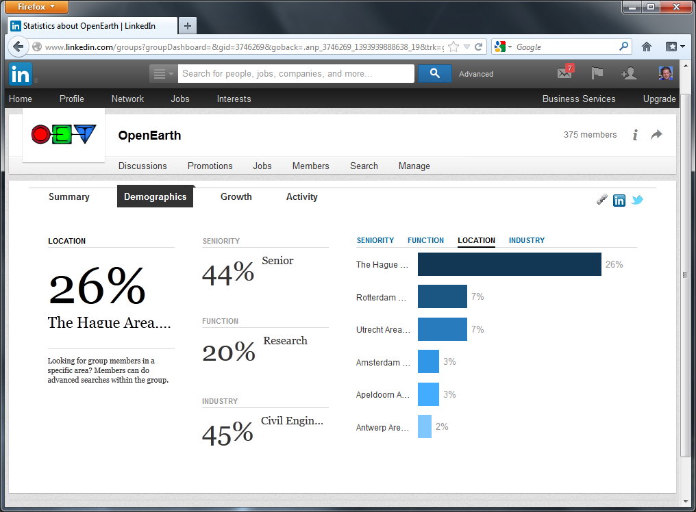
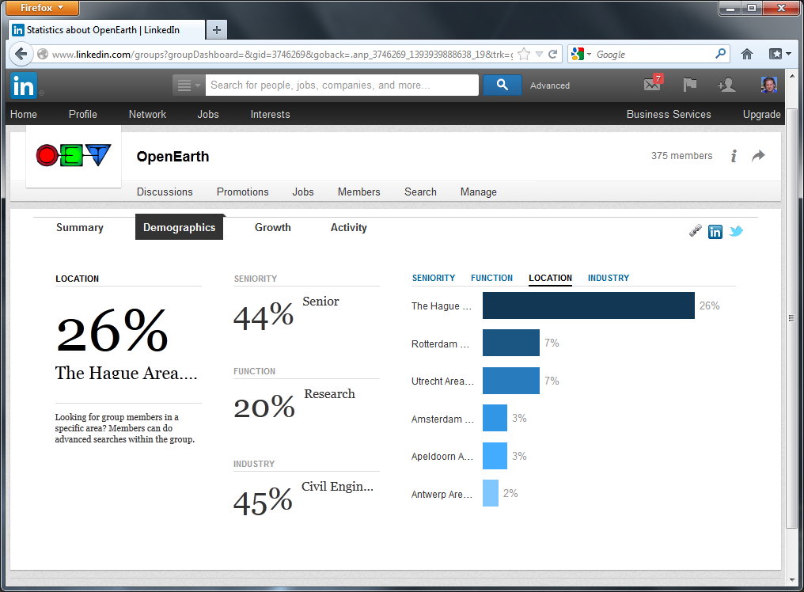

OpenGIS
@ Delft Software Days 2014
Fedor Baart

Agenda
| 09:00 - 09:15 | Introduction, Fedor Baart |
| 09:15 - 10:30 | PostGIS and Qgis, Frank Keppel |
| 10:30 - 11:00 | |
| 11:00 - 12:30 | Gridded data, Giorgio Santinelli |
| 12:30 - 14:00 | |
| 14:00 - 15:30 | Visualizing with KML, Kees den Heijer |
| 15:30 - 16:00 | |
| 16:00 - 17:30 | Services, Fedor Baart |
| 17:30 - 18:30 |


Organized by OpenEarth
- Data
- Models
- Tools
 

Dutch Open Data Award

Sessions

Join the
FOSS4G Europe
OSGeo's European Conference on Free and Open Source Software for Geospatial
15-17 July 2015
Agenda
| 09:00 - 09:15 | Introduction, Fedor Baart |
| 09:15 - 10:30 | PostGIS and Qgis, Frank Keppel |
| 10:30 - 11:00 | |
| 11:00 - 12:30 | Gridded data, Giorgio Santinelli |
| 12:30 - 14:00 | Lunch Break |
| 14:00 - 15:30 | Visualizing with KML, Kees den Heijer |
| 15:30 - 16:00 | |
| 16:00 - 17:30 | Services, Fedor Baart |
| 17:30 - 18:30 |